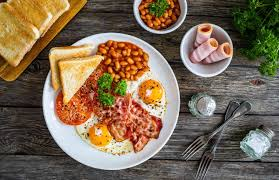
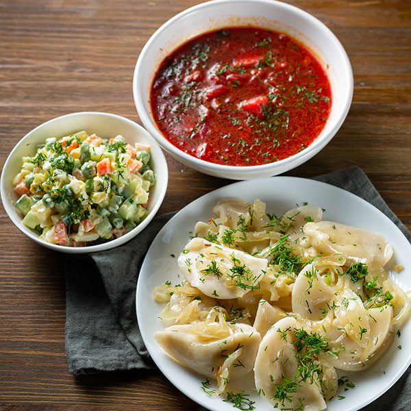
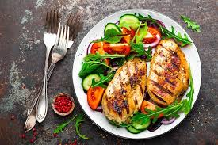

Завтрак
Заряд бадьорості!
Наші сніданки – це ідеальний початок дня. Ситні омлети, свіжі тости та ідеально заварена кава дають вам необхідну енергію та фокус для всіх ранкових завдань. Ми використовуємо лише локальні та свіжі інгредієнти.
Користь: Прискорює метаболізм, покращує концентрацію.
Почати день тут →

Обід
Баланс смаку та користі. Забудьте про важку та нездорову їжу! Наші бізнес-ланчі розроблені, щоб подарувати вам відчуття ситості без відчуття втоми. Легкі супи, збалансовані основні страви та свіжі салати допоможуть вам підтримати продуктивність до вечора.
Користь: Підтримує рівень цукру в крові, запобігає післяобідній сонливості.
Переглянути ланчі →

Вечеря
Заслужений відпочинок. Завершіть свій день без відчуття важкості. Наше вечірнє меню включає легкі страви, що легко засвоюються, але є насиченими корисними речовинами: запечене м'ясо, риба та багато овочів. Це ідеальний спосіб потурбуватися про себе перед сном.
Користь: Сприяє якісному сну, допомагає організму відновитися.
Закінчити день тут →